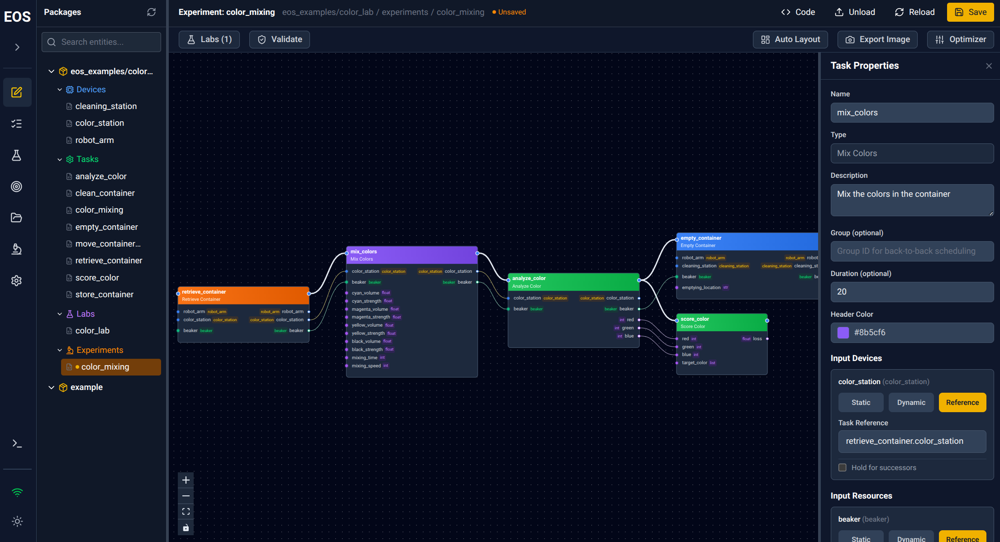

Web UI#
EOS includes a rich web UI for visually designing protocols, monitoring execution, controlling devices, browsing results, and more. It connects to the EOS orchestrator and provides real-time updates.
Access it at http://localhost:3000 (default host and port).

Screenshot of the EOS web UI editor view.#
Editor#
The editor is the central workspace for designing and building EOS packages.
Visual protocol designer with interactive task graphs showing dependencies and data flow
Build protocols by adding tasks, connecting inputs/outputs, assigning devices, and configuring parameters
Seamless switching between visual and code views (changes sync both ways)
Reload tasks, devices, labs, and protocols without restarting EOS
Syntax-highlighted code editing for YAML configs and Python code
Package file tree for creating, renaming, and deleting entities
Tasks#
The tasks view manages individual task submissions.
Submit tasks using specific devices and input parameters
Clone previous tasks for easy re-submission
Protocol Runs#
The protocol runs view tracks individual protocol run execution.
Submit protocol runs with specific task parameters
Visual task flow graph with real-time status updates (pending, running, completed, failed)
Inspect task inputs, outputs, devices, and timing
Campaigns#
The campaigns view manages repeated protocol run execution and optimization.
Submit campaigns with parameters as JSON/CSV, or via optimizer sampling
Configure optimizer settings when optimization is enabled
Monitor progress with optimization charts and Pareto front visualization
Configurable auto-refresh intervals across all views
Device Inspector#
The device inspector provides direct device interaction, especially useful for debugging and testing.
Live device state monitoring
Discover available RPC functions and their signatures
Call device functions directly with specific parameter inputs
View call history and results
Files#
The file browser provides access to EOS object storage (S3-compatible).
Upload, download, delete, and search files
Management#
The management view handles system configuration.
Packages – Installed packages and their status
Labs – Load, unload, and reload laboratory configurations
Devices – Device health status and lab assignments
Task Plugins – Available task types and their parameter specs
Protocol Types – Load, unload, and reload protocol configurations
Logs#
A log panel accessible from the sidebar streams orchestrator logs in real time.